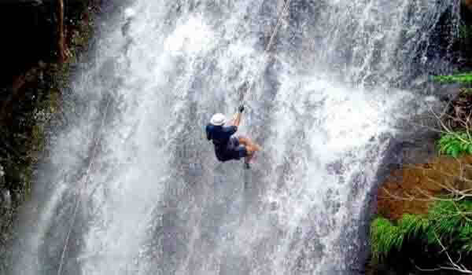

महाराष्ट्र हे पर्यटन स्थळांनंतर, वन्य आणि विक्षिप्त साहसी खेळांच्या थरार अनुभवण्यासाठी सर्वाधिक उत्तम ठिकाण आहे. रॅपेलिंग एक असा साहसी खेळ आहे जो असंख्य अॅडव्हेंचर खेळांच्या यादीमध्ये सर्वात जास्त केला जातो.
महाराष्ट्रात हरिश्चंद्रगड येथील कोकण कडा, ड्यूक्स नोज लोणावळा, रतनगडजवळील संधान व्हॅली ( दरी ) आणि मुंबईजवळ कर्जत ही मॅडकॅप अॅडव्हेंचरिंग स्पोर्टमध्ये सहभागी होण्यासाठी उत्तम ठिकाणे आहेत. अधिक रोमांचक अनुभवासाठी, धबधब्यावरील रॅपलिंग करू शकता. अत्यंत आव्हानांचे वैशिष्ट्य असलेले धबधब्यावरील रॅपलिंग कुंडलिका नदी, भिवपुरी, कोंडाणे लेणी, पानशेत आणि डिकसळ या ठिकाणी होते.
साहसी उत्सुकतेची क्रेझ कमी करण्यासाठी राज्यात असंख्य पर्याय उपलब्ध आहेत. रॅपेलिंगसाठी उत्तम समतोल आणि मजबूत पायाची पक्कड आवश्यक असते. धोकादायक उतरत्या स्थितीला सामोरे जाण्यासाठी सज्ज असावे आणि लक्ष केंद्रित करून अस्थिर जागी पाय ठेवणे ही मुख्य गोष्ट आहे. राज्याला असंख्य धबधब्यांचा आशीर्वाद मिळाल्यामुळे पावसाळ्यात या साहसी खेळाचा उत्तम आनंद लुटता येतो.
कोकण कडा :
महाराष्ट्रातील अहमदनगर प्रदेशातील एक टेकडी किल्ला, हरिश्चंद्रगड हा माळशेज घाटाच्या परिसरामध्ये येतो. गडाची उंची १४२२ मीटर (४,६६५ फूट) पर्यंत आहे आणि येथील खडकाळ दर्शनी भागामुळे हा कोकण कडा म्हणून ओळखला जातो.
संधान व्हॅली :
हा महाराष्ट्रातील सर्वात कठीण रॅपेलिंग पॉईंट आहे. येथून अलंग, मदन, कुलंग, रतनगड, अजोबा आणि कळसूबाई शिखर पहाण्याचा आनंद घेता येतो. ही २०० फूट खोल आणि सुमारे १ किमी लांबीची पाण्यात या दरीमध्ये अनेक ठिकाणी ४५ फूट पर्यंत रॅपलिंग केली जाते.
कुंडलिका नदी रॅपेलिंग :
कुंडलिका नदीजवळ धबधबा रेपेलिंगमध्ये जाऊन एक अविस्मरणीय साहसी कार्य करा ! सह्याद्री पर्वताशी जोडलेल्या शिखरावर धबधब्याच्या मार्गे जा. जेव्हा आपण धबधब्याच्या रॅपेलिंगच्या ऑफबीट स्पॉटमध्ये गुंतलेले असाल तेव्हा धावत्या धबधब्याने तुम्हाला एक दुर्मिळ आणि अविस्मरणीय अनुभव घेता येतो.